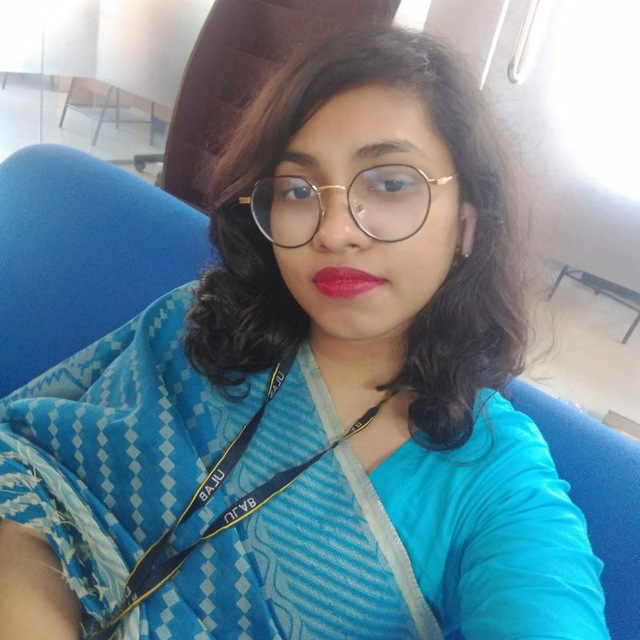

Farjahan Akter Boby
Contact: 0181*******
Gmail: farjahanakboby@gmail.com
Telegram: Farjahan_Boby
OBJECTIVE
Currently in my 4th year of BSc. in computer science and Engineering at University of Liberal Arts Bangladesh (ULAB).
I want to start my career at a place where I can fully utilize the skills that I've learned over the years.
COMPLETED PROJECTS
- JAVA: Bank Management Software, signup, enroll as employee or customer, add account, delete account & show account information (Employee interface), Deposite, withdraw & transfer money (Customer employee)
- C: Crypto Engine, Signup/login, encryption and decryption system
- C++: Hospital Management System, Admin & user interface, Signup/login, Create survey (ID, Age, Syndrome), search, display
- C++: Bookish, Admin (Add, Display, Remove items, display sale list etc.), Customer (Add item to cart, Remove item, print invoice etc.).
- Database: Smart Health Care
- Website Developing: Bistro Website, using HTML, CSS, JavaScript, Bootstrap 5
RESEARCH EXPERIENCES
- Machine Learning: Prediction Kidney Disease,
- Collected Data
- Worked with model
- Deep Learning: Emotion Recognition,
- Collected and annoted Data
- Worked with model
- Deep Learning: Detect Rotten and Fresh Fruit,
- Collected Data
- Helped in paper writting
EDUCATION
| Exam |
Board/University |
Year |
Institute |
Marks |
| BSc |
Dhaka |
2020-Ongoing |
University of Liberal Arts Bangladesh |
3.80 |
| HSC |
Dhaka |
2018 - 2019 |
Mohammadpur Preparatory High School and College(Girls' Wings) |
4.83 |
| SSC |
Dhaka |
2016 - 2017 |
Sher-E-Bangla Nagar Govt. Girls High School and College |
4.95 |
| JSC |
Dhaka |
2014 |
Sher-E-Bangla Nagar Govt. Girls High School and College |
5.00 |
| PSC |
Dhaka |
2011 |
Kallanpur Laboratory High School |
4.68 |
CO-CURRICULAR
- Finance Secretary at ULAB Computer Programming Club (UCPC), 2022
- Finalist of CTO Forum Innovation Hackathon Bangladesh, 2021
- Participated in The International Collegiate Programming Contest ICPC 2021 (Dhaka Regional)
- Ranked 95th position in National Girls Programming Contest (NGPC) 2021
- Rover Mate at Bangladesh Scout (2012-2017) at Sher-E-Bangla Nagar Govt. Girls’ High
SPECIAL SKILLS
- Programming Language: C, C++, Python, JAVA
- Web Based Skills: HTML, CSS
- Others: Microsoft Excel, Microsoft Word, Microsoft Powerpoint
- Database Skills: MySQL
HOBBIES
- Reading and collecting books
- Painting
- Coding
PERSONAL INFORMATION
| Full Name |
: Farjahan Akter Boby |
| Father's Name |
: Md: Hanif Mia |
| Mother's Name |
: Rahima Begum |
| Permanent Address |
: House no.12, Road No.1, Kallanpur, Dhaka-1207 |
| Present Address |
: House no.12, Road No.1, Kallanpur, Dhaka-1207 |
| Date of Birth |
: 29-12-2002 |
| Sex |
: Female |
| Blood Group |
: B+ |
| Religion |
: Islam |
| Nationality |
: Bangladeshi |
| Contact No. |
: 01810113680 |
DECLARATION
I hereby declare to the best of my knowledge and belief that this resume correctly describes my qualifications and
abilities. I realize that willful misstatement may result in disqualification or disposals if engaged.
Copyright@ Farjahan Akter Boby, 2023